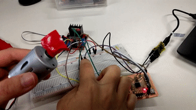

The assignment for this week is to controll different output devices using one of the FabLab made boards from previous weeks, better the devices that will be used in the final project. For me, I tried working with a DC motor and an acoustic buzzer.
For my final project, I would like to make a height adjustable desk that can be raised or lowered to accommodate user's both sitting and standing postures. Originally when discussed with Danielle, I wanted to use a Stepper Motor and other mechanical parts like timing belt and pulleys to create the motion for the desk. However, after looking around for aternative methods, I found out that I should better use a Linear Actuator which creates motion in a straight line, which is more stable and suitable for this project's purpose than rotaty motion created by a stepper motor. Thus, I have ordered one but it has not arrived yet, so I am testing with a DC Motor instead because it can be similarly controlled with a microcontroller: I need to use a H-Bridge motor controller together with the microcontroller to reverse the actuator's direction of motion under the trigger of a button.
Another output device I need for my final project is a buzzer, which will beep some notification sound after some time of idle sitting or standing. This means, the desk will detect human's presence and after some pre-defined time if the person is still at the desk with the same sitting/ standing posture, it will beep to tell the person that they should change their posture.
I am also considering adding an OLED display where the user can use together with a potentiometer to define the time interval after which the buzzer will be triggered. This will be done afterwards for the final project.
I used a 12V DC Motor and a L298N Dual H-Bridge Motor Controller found in the FabLab and followed the instructions in this useful tutorial on HOW TO MECHATRONICS to wire up the motor to the L298N module and to my FabLab-made board from Week 9:
L298N Controller board's pin ----- ATMEGA328 Board's pin
ENA ------------------------------ D9/PWM4
IN1 ------------------------------ D5/PWM2
IN2 ------------------------------ D6/PWM3
GND ------------------------------ GND
L298N Controller board's pin ----- DC Motor's pin
OUT1 ----------------------------- RED wire
OUT2 ----------------------------- BLACK wire
I also attached a button and a 10K resistor to the microcontroller.
This motor controller can support 2 DC motors but I only need 1 so I am only using the Enable Pin A (ENA) which has to be connected to a PWM pin on the microcontroller to control the speed of rotation without having to change the voltage supplied to the DC Motor (which can also be used to achieve the same affect). The IN1 and IN2 pins are used to control the direction of rotation and have to be connected to 2 Digital pins on the microcontroller. When IN1 is set to LOW and IN2 is set to HIGH, the Motor turns in one direction and vice versa, when IN1 is HIGH and IN2 is LOW; the Motor turns in the other direction. The motor's red and black wires are connected to the OUT1 and OUT2 pins on the controller module and the order does not matter because it will only reverse the direction of rotation. Finally, I also need to provide 12VDC between the 12V and GND terminals on the Controller module, meanwhile the ATMEGA328 Board uses a separate 3.3V power supply from the TTL-Serial converter like in previous assignments.
Afterwards, I modified the example sketch from the tutorial by removing the lines relating to the potentiometer because I am not using one, and provide a fixed PWM value of 80 to the ENA pin so that the motor rotates slowly enough for me to capture it in a video. The final code looks like this:
And it works, the motor's diretion of rotation is reversed every time I press the button:
The acoustic buzzer is much simpler than the DC motor to control. I simply need the (+) side of it to a PWM pin and the (-) side of it to the GND pin of the microcontroller, for example:
ATMEGA328 Board's pin ----- Buzzer's pin
D3/INT1/PWM1 -------------- RED wire
GND ----------------------- BLACK wire
I also wrote a small sketch to make the buzzer beeps 3 tones of different frequencies at the starting up of the microcontroller:
Here it can be seen that the playNotes() function create 3 notes using the tone() function of Arduino: 2 notes with a frequency of 350Hz, 1 with a frequency of 300Hz. All of them have a length of 200ms and loudness of 250 (out of 255).
And here is a video of the buzzer making tones when I reboot the microcontroller.
Luckily, I did not encounter any problems for this week's assignment.